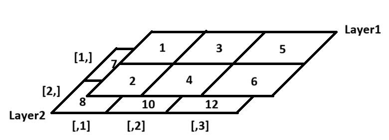

c <- 1:10
m <- matrix(c, nrow = 2, ncol = 5)
m [,1] [,2] [,3] [,4] [,5]
[1,] 1 3 5 7 9
[2,] 2 4 6 8 10Vector was a 1-dimensional data, meaning each vector can hold one type. For example, if we create vector of heights, all elements must be height numbers. However, what if we want need to hold details about the data? For example, height by gender?
Matrix is a 2-dimensional data structure, holding rows and columns. Just like vector, matrix must hold one type of data.
There’s two ways to declare matrix.
c <- 1:10
m <- matrix(c, nrow = 2, ncol = 5)
m [,1] [,2] [,3] [,4] [,5]
[1,] 1 3 5 7 9
[2,] 2 4 6 8 10Here, did you notice the order of elements? R fills the matrix by column first, then row. If you want to fill by row first, use byrow = TRUE option.
m <- matrix(c, nrow = 2, ncol = 5, byrow = TRUE)
m [,1] [,2] [,3] [,4] [,5]
[1,] 1 2 3 4 5
[2,] 6 7 8 9 10v1 <- c(1, 2, 3)
v2 <- c(4, 5, 6)
m_row <- rbind(v1, v2)
m_row [,1] [,2] [,3]
v1 1 2 3
v2 4 5 6m_col <- cbind(v1, v2)
m_col v1 v2
[1,] 1 4
[2,] 2 5
[3,] 3 6One thing to consider is the recycling rule. Whenever you’re working with data sets, having different dimensions will cause shorter data set to repeat.
v1 <- c(1,2,3)
v3 <- c(7, 8)
m_row2 <- rbind(v1, v3)Warning in rbind(v1, v3): number of columns of result is not a multiple of
vector length (arg 2)m_row2 [,1] [,2] [,3]
v1 1 2 3
v3 7 8 7With a same logic, you can create matrix by combining vector with matrix or matrix with matrix using bind() functions.
c <- 1:10
rbind(c, 11:20) [,1] [,2] [,3] [,4] [,5] [,6] [,7] [,8] [,9] [,10]
c 1 2 3 4 5 6 7 8 9 10
11 12 13 14 15 16 17 18 19 20Just like vector, you can access specific elements of matrix using index. However, since matrix has two dimensions, you need to specify both row and column index.
When you index, you use matrix[row, column] format.Emptying either means “all of them,” and you can also use range like how we created 1,2,3,4 with 1:4.
test <- matrix(1:25, nrow=5, ncol=5)
test [,1] [,2] [,3] [,4] [,5]
[1,] 1 6 11 16 21
[2,] 2 7 12 17 22
[3,] 3 8 13 18 23
[4,] 4 9 14 19 24
[5,] 5 10 15 20 25test[2, 3] # Access element at 2nd row, 3rd column[1] 12test[ , 4] # Access all rows in 4th column[1] 16 17 18 19 20test[5, 1:3] # Access 1st-3rd column in 5th row[1] 5 10 15There is special about matrix in R. If you use minus, like [, -2], it means “Don’t display (whatever you decide)”. This means that you can manipulate matrix! Look at example below. Do you notice that 6-10 are missing?
test[ , -2] # Access all rows except 2nd column [,1] [,2] [,3] [,4]
[1,] 1 11 16 21
[2,] 2 12 17 22
[3,] 3 13 18 23
[4,] 4 14 19 24
[5,] 5 15 20 25test <- test[ , -2] # By saving "test matrix without 2nd column", you can remove 2nd column from original matrix testLike how matrix fills in order (like column first, then row), when you remove rows or columns, you can manipulate matrix beyond simply removing specific rows or columns. Look at example below. For example, 1:5 mean “1st to 5th row.” Then what will happen if we do 5:1?
test[5:1, ] [,1] [,2] [,3] [,4]
[1,] 5 15 20 25
[2,] 4 14 19 24
[3,] 3 13 18 23
[4,] 2 12 17 22
[5,] 1 11 16 21Because we’re displaying test matrix from 5th row to 1st row, the order of rows get reversed! Pause and Think: what would test[order(a[, 2]), ] do?
Like how we filtered out the matrix, we can manipulate them using logical operations. In this case, it only displays elements that’s TRUE. Check example below.
people <- c("John", "Jane", "Jim", "Jill", "Jack")
Age <- c(28, 34, 29, 42, 23)
Height <- c(175, 160, 180, 165, 170)
Information <- cbind(people, Age, Height) # Imagine what output it would be!
Information[ , c(T,F,T)] # Display only 1st and 3rd column (those with TRUE) people Height
[1,] "John" "175"
[2,] "Jane" "160"
[3,] "Jim" "180"
[4,] "Jill" "165"
[5,] "Jack" "170" Information[Information[ ,2] > 30, ] # Display only rows where Age (2nd column) is greater than 30 people Age Height
[1,] "Jane" "34" "160"
[2,] "Jill" "42" "165" However, there is issue with the structure of matrix when we combine multiple vectors. Let’s say you want to investigate average bloodpressure of a patient
# Data with visiting date, bloodpressure, and patient id
record <- matrix(c("2023-01-01", 120, 123,
"2023-01-02", 130, 124,
"2023-01-01", 125, 456,
"2023-01-02", 135, 456), nrow=4, ncol=3, byrow=TRUE)
record [,1] [,2] [,3]
[1,] "2023-01-01" "120" "123"
[2,] "2023-01-02" "130" "124"
[3,] "2023-01-01" "125" "456"
[4,] "2023-01-02" "135" "456"Avg_BP <- mean(as.numeric(record[, 2])) # Think, why do we need as.numeric() ?
Avg_BP[1] 127.5But you realized that you forgot the heights of patients, and you create new matrix.
# Data with visiting date, height, bloodpressure, and patient id
record_fix <- matrix(c("2023-01-01", 150, 120, 123,
"2023-01-02", 150, 130, 124,
"2023-01-01", 150, 125, 456,
"2023-01-02", 150, 135, 456), nrow=4, ncol=4, byrow=TRUE)
Avg_BP <- mean(as.numeric(record_fix[, 2])) # Run the same code again
Avg_BP[1] 150After fixing the matrix, running same code that gave us average blood pressure is giving us wrong result! This is because adding new column shifted location of existing information. Then how can we track which information is where? This is where rownames() and colnames() takes place to assign titles to rows and columns.
colnames(record_fix) <- c("Date", "Height", "BloodPressure", "PatientID")
record_fix Date Height BloodPressure PatientID
[1,] "2023-01-01" "150" "120" "123"
[2,] "2023-01-02" "150" "130" "124"
[3,] "2023-01-01" "150" "125" "456"
[4,] "2023-01-02" "150" "135" "456" Now, we can access information by their names, not by their index. This way, even if we add new information, we can still access existing information without worrying about shifting index.
Avg_BP <- mean(as.numeric(record_fix[ , "BloodPressure"]))
Avg_BP[1] 127.5Great fix! By the way, review old matrices like “Information” or m_row, and compare to “record.” Do you notice two have colnames while one doesn’t? This is where creating matrix by combining vectors (rbind, cbind) is better than creating matrix by dividing single vector (how we made record). When you use rbind() and cbind(), they recognize names of vectors, thinking “these values belong under the name of the vector!” As result, functions automatically assign colnames() or rownames() using vector names.
One last thing, matrix is 2x2. What if you only give one index like how we did in vector indexing? In matrix, inputing one index means matrix will behave like a vector. So, like how matrix fills by column first and then rows, matrix[i] will return index after scanning column and row order.
last <- matrix(1:9, nrow=3, ncol=3)
last [,1] [,2] [,3]
[1,] 1 4 7
[2,] 2 5 8
[3,] 3 6 9last[5] # Since it's 3x3, 5th index will be [2,2]. 1st column (3 elements), and 2nd column's 2nd element. [1] 5last[last > 5] # Returns all elements greater than 5 as 1-dimensional vector[1] 6 7 8 9Before we get into calculation of matrix, you should know the math behind matrix calculation. Please review concepts regarding matrix, adding/subtracting/multiplying matrices. Others are good to know but optional. Link is here

Now let’s try calculating matrix in R. First, creating two matrices with same dimension.
A <- matrix(1:9, nrow=3, ncol=3)
B <- matrix(9:1, nrow=3, ncol=3)
A [,1] [,2] [,3]
[1,] 1 4 7
[2,] 2 5 8
[3,] 3 6 9B [,1] [,2] [,3]
[1,] 9 6 3
[2,] 8 5 2
[3,] 7 4 1A + B [,1] [,2] [,3]
[1,] 10 10 10
[2,] 10 10 10
[3,] 10 10 10B - A [,1] [,2] [,3]
[1,] 8 2 -4
[2,] 6 0 -6
[3,] 4 -2 -8A * B [,1] [,2] [,3]
[1,] 9 24 21
[2,] 16 25 16
[3,] 21 24 9A / B [,1] [,2] [,3]
[1,] 0.1111111 0.6666667 2.333333
[2,] 0.2500000 1.0000000 4.000000
[3,] 0.4285714 1.5000000 9.000000Great! R is doing element-wise calculation. This means that R is adding/subtracting/multiplying/dividing each element in same position. For example, A[1,1] + B[1,1], A[1,2] + B[1,2], and so on.
One question, do matrix follow recycling rule? Try making two matricies with different dimension and adding them. You’ll see the error - R cannot perform calculations that violates fundemental rules of math. However, when you’re using vector and matrix, vectors can be recycled.
C <- c(0, 10, 100)
A + C [,1] [,2] [,3]
[1,] 1 4 7
[2,] 12 15 18
[3,] 103 106 109However, we should keep in mind that vector should be shorter than the number of elements in the matrix. If vector is longer, what are we adding leftover vector elements with?
###nrow(), ncol(), dim()
How do we know size of unknown matrix? nrow() and ncol() returns number of rows and columns, while dim() returns both as vector. dim() returns column size first! Don’t get confused with [row, column] in indexing.
m <- matrix(1:12, nrow=3, ncol=4)
nrow(m)[1] 3ncol(m)[1] 4dim(m)[1] 3 4Earlier, we saw how we can assign row names and column names by rownames() <- c(names). However, can we do the opposite? Like, checking names of cols and rows instead of assigning? Yes! Instead of assigning through <-, you can use rownames(matrix) or colnames(matrix) to check names of rows and columns.
colnames(m) NULLrownames(m)NULLHere, we get Null (empty). Why is that? Look at how m looks like and think about it!
Transpose matrix is matrix with switched rows and columns (for example, 2x3 becomes 3x2). In R, you can do this by t() function.
m [,1] [,2] [,3] [,4]
[1,] 1 4 7 10
[2,] 2 5 8 11
[3,] 3 6 9 12t(m) [,1] [,2] [,3]
[1,] 1 2 3
[2,] 4 5 6
[3,] 7 8 9
[4,] 10 11 12###Moving between matrix and vector
Sometimes, you may want to convert matrix into vector or vice versa. You can do this by as.vector() or c(). as.vector() unstrings matrix into single line (= vector). And do you remember how giving one input feature in indexing make matrix behave like vector? c() function does the same thing. If you do c(matrix) without telling what else to combine with, c() will combine matrix itself into one string, making it vector.
Testmat <- matrix(1:9, nrow=3, ncol=3)
as.vector(Testmat)[1] 1 2 3 4 5 6 7 8 9c(Testmat)[1] 1 2 3 4 5 6 7 8 9Often, we need to perform calculation throughout row or column of the matrix (e.g. finding average height by each person, finding total score by each student). Instead of writing all elements individually, we can use apply() function.
apply() has three main arguments (inputs). X (target), Margin (which direction do you want to apply the function? 1 is row, 2 is column), and Function (work you want to perform)
Scores <- matrix(c(90, 85, 88,
78, 92, 80,
85, 87, 90), nrow=3, byrow=TRUE)
colnames(Scores) <- c("Math", "Science", "English")
Scores Math Science English
[1,] 90 85 88
[2,] 78 92 80
[3,] 85 87 90#Let's find average score of each subjects
math_avg <- (Scores[1,1] + Scores[2,1] + Scores[3,1]) / 3
math_avg Math
84.33333 #Doing this for each column is annoying. Let's use apply()
exam_avg <- apply(Scores, 2, mean) # Find mean (function) of matrix (Scores) by column (2)
exam_avg Math Science English
84.33333 88.00000 86.00000 Vector is 1-dimensional, matrix is 2-dimensional. What if we want to hold more than 2 dimensions? For example, what if we want to hold height and weight by gender? This is where array comes in. Array is multi-dimensional data structure, meaning it can hold 3 or more dimensions. However, like vector and matrix, array can only hold one type of data.
We can declare by matrix in a similar way to how we declared vectors. 1. Define matricies you want to stack 2. Use array() function to stack them * Remember, dimension should be identical to be able to stack them.
mat1 <- matrix(1:6, nrow=2, ncol=3)
mat2 <- matrix(7:12, nrow=2, ncol=3)
arr <- array(c(mat1, mat2), dim = c(2, 3, 2)) # 2 rows, 3 columns, 2 layers
arr, , 1
[,1] [,2] [,3]
[1,] 1 3 5
[2,] 2 4 6
, , 2
[,1] [,2] [,3]
[1,] 7 9 11
[2,] 8 10 12Unlike how matrix or vectors were single layer, you’ll see that 3D array has layers, shown as “, , 1” and “, , 2”. Arrays fill data just like matrix. Column first, then rows (next columns), then layers. In the same way, you can index them. Array[row, column, layer]. If you expand it to 4,5,6th dimensions? You just keep adding commas! For example, array[row, column, layer, 4th dimension, 5th dimension]
It is difficult to imagine it, so I’ll visualize 3D array we made (arr) below.

Just like colnames and rownames in matrix, you can assign names to each dimension using dimnames() function.
dimnames(arr) <- list(
Row = c("R1", "R2"),
Column = c("C1", "C2", "C3"),
Layer = c("L1", "L2")
)
arr, , Layer = L1
Column
Row C1 C2 C3
R1 1 3 5
R2 2 4 6
, , Layer = L2
Column
Row C1 C2 C3
R1 7 9 11
R2 8 10 12Now, you can index using names too!
arr["R1", "C2", "L1"][1] 3However, there is one thing that you should be careful. Let’s look at the example below
arr[1, 2:3, 1:2] # Access 1st row, 2nd-3rd column, all layers Layer
Column L1 L2
C2 3 9
C3 5 11We asked them to display first row, 2nd-3rd column, all layers: 3D data. However, output is 2x2 matrix, a 2D data. Like this, when R can display result in lower dimension, it will do it. If you want to keep the original dimension, use drop = False argument. If you look at the example below, you’ll see that output is seperated into two layers again.
arr[1, 2:3, 1:2, drop = FALSE] , , Layer = L1
Column
Row C2 C3
R1 3 5
, , Layer = L2
Column
Row C2 C3
R1 9 11Omitted. Everything is same as Matrix calculation.
Matrix and Array can be used in a lot of places. Due to its compact representation of high dimnesional data, we often use matrix to represent equations with multiple dimension. For example,
3x + 2y = 5 4x + 6y = 12
can be written as [3, 2, 5]; [4, 6,12] (; is used to seperate rows). So, we condensed multiple equations into one 2x3 matrix. This also means that we can use matrix to solve complex equations.
Using the matrix above as example, we have two parts: variables (x and y), and constants (5 and 12). We can separate them into two matrices:
A <- matrix(c(3, 2,
4, 6), nrow=2, byrow=TRUE) # Coefficient matrix
B <- matrix(c(5, 12), nrow=2) # Constant matrix
colnames(A) <- c("x", "y")Now, you can just use solve() to find values of x and y!
solution <- solve(A, B)
solution [,1]
x 0.6
y 1.6This is core concept of linear algebra, which will help you understand more advanced machine learning algorithms. However, it’s difficult to understand without proper math background, so we’ll come back to this later. For now, watch this playlist to get introduction to linear algebra. I highly recommend this.
Throughout Chapter 3 and 4, we reviewed basic concepts of vector (1D), matrix (2D), and array (Multiple D). While we defined three different data structure, are they really different? Think about this. We declared matrix by combining vectors into two dimensions. Then, we declared 3D array by stacking matrices. However, way to higher dimension is just repeating same process: adding a new axis by combining existing structure. So, doesn’t that mean matrix is vector and array is also vector in the end? You’re right, it is.
So array is often seen as ‘generalized vector’ or ‘generalized matrix.’ While vector is tied to 1D and matrix is tied to 2D, array can build as much as dimensions you want using vector. Next time, we’ll explore the list (like a shopping list or to-do list). You’ll be able to verify using code how vector to array are all same thing. Then, keep this in your mind and see you in the next chapter!